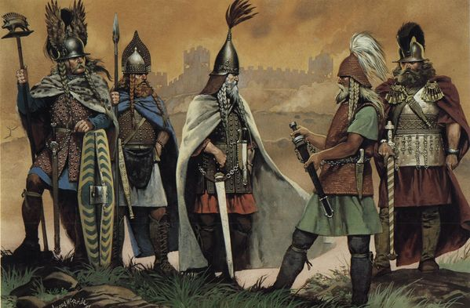

Gallia
Ez az a hely, ahol a dicsőség és a gazdagság vár rád, ha merész vagy és keményen harcolsz a területért. Képzeld el, hogy átvonulsz a hatalmas hegyeken és áthatolva az őserdőkön, kardod csillogása megfélemlí a hegyeket magukat. A harcmezőkön találkozol a kemény gall harcosokkal, akik nem adják könnyen a földjüket, de te nem hajolsz meg előttük, hanem magabiztos léptekkel haladsz előre. A csaták zaja és a vér íze mellett érzed, hogy minden pillanatban közelebb kerülsz a győzelemhez, ami nemcsak hatalmat, de hatalmas jövedelmet és megbecsülést is jelent. A falakon áttörve belépsz a városokba, melyek gazdagsága és kincsei várnak, csak rád várnak, hogy megszerezd őket. Ha erre a szolgálatra jelentkezel, igazán gazdag lehetsz, de vigyázz! Ez egyben az egyik legnehezebb és veszélyesebb küldetésünk. Az itt élők rendkívűl szívósak és álhatatosak. Nagyon jó harcosok, igen fejlett taktikai érzékkel. Éppen ezért ide a legbátrabb és legszívósabb jelentkezőket küldjük.
